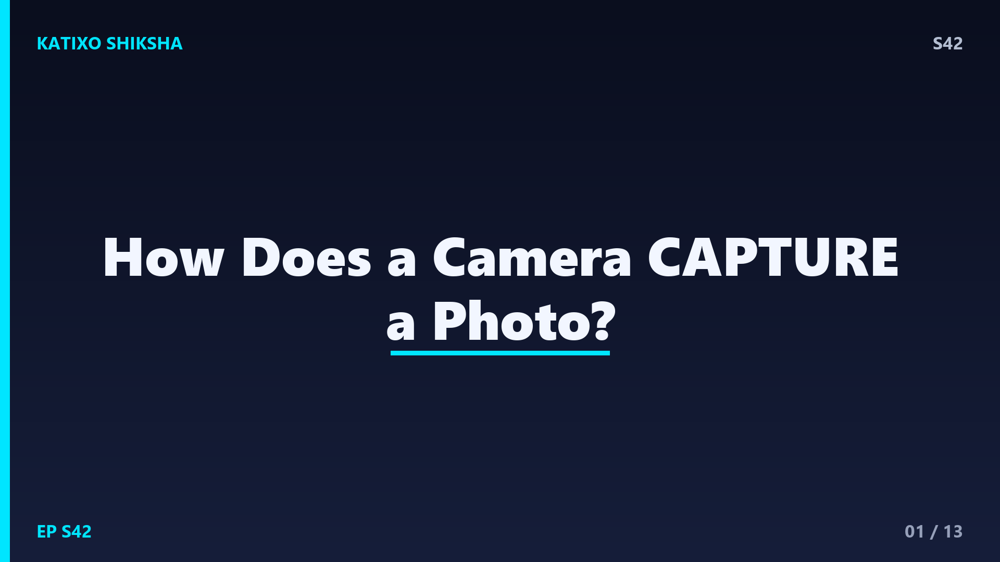
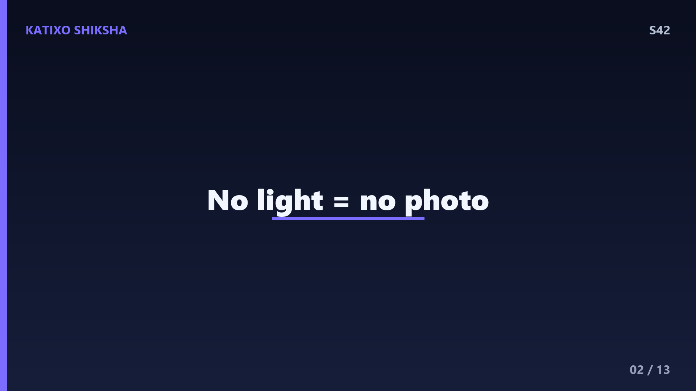
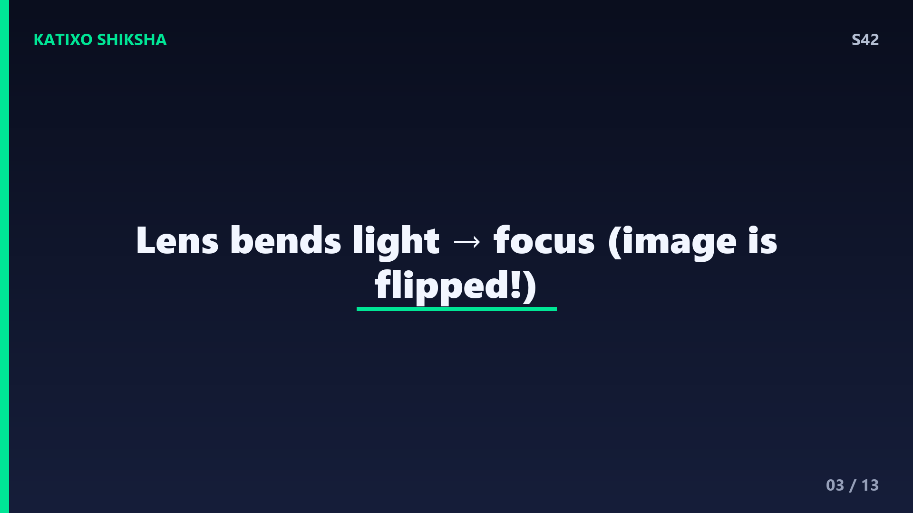
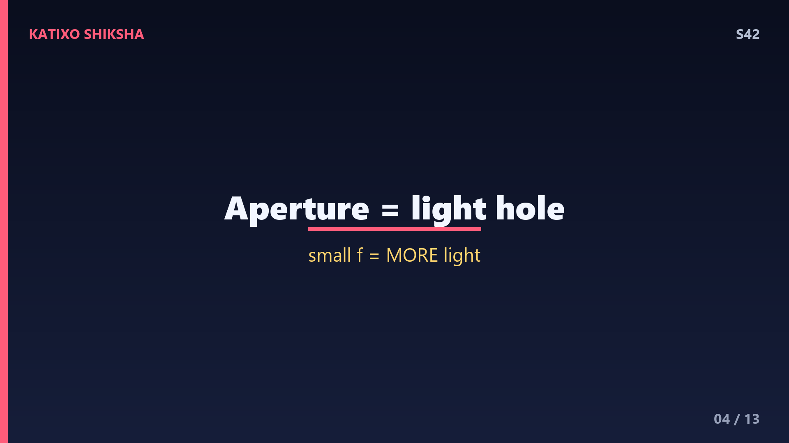
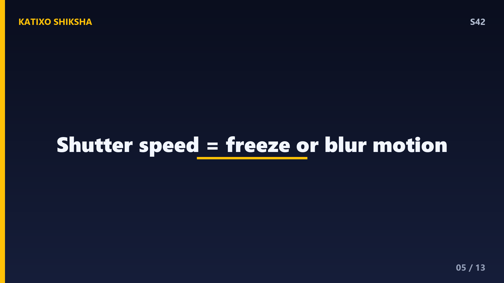
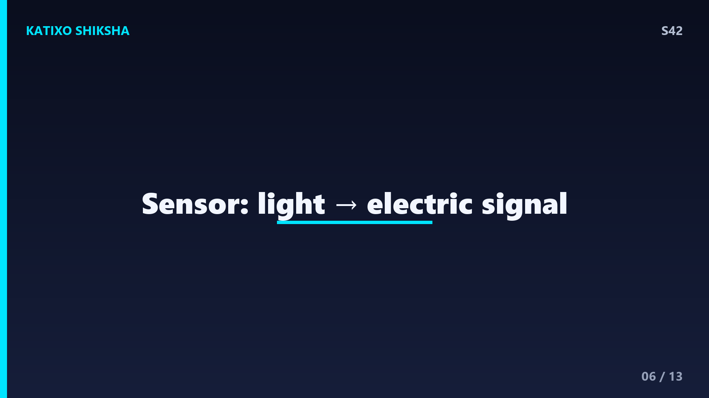
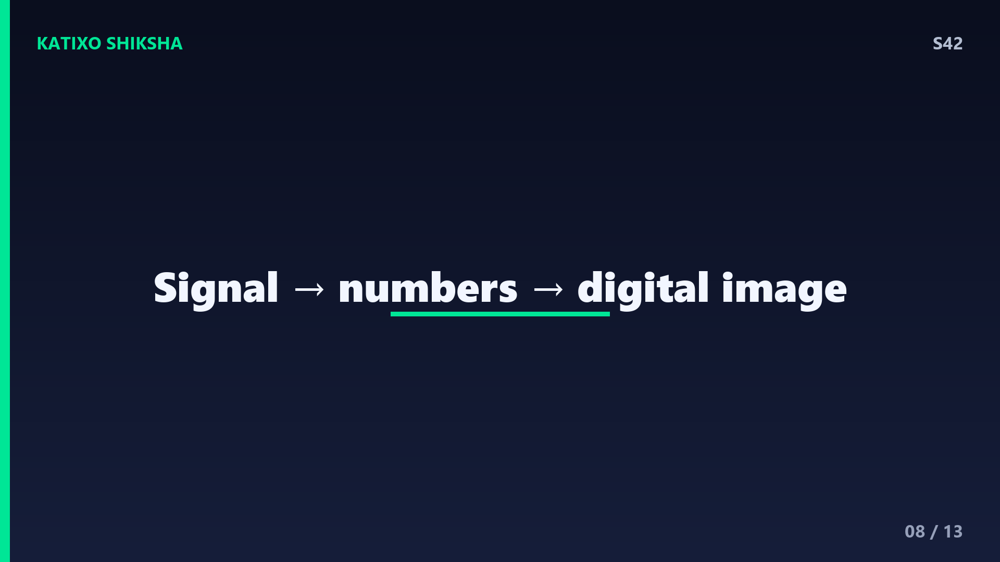
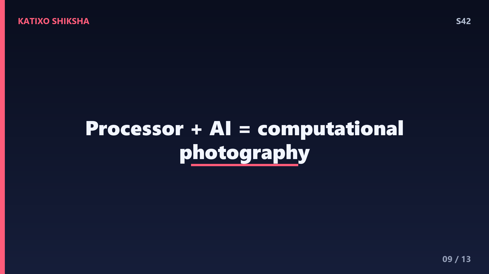

S42 — कैमरा एक पल को हमेशा के लिए कैसे कैद करता है?

Slide 1दोस्तों, ज़रा सोचो — तुम एक button दबाते हो, click! और एक पल हमेशा के लिए कैद हो जाता है। तुम्हारी हंसी, सूरज ढलता आसमान, दोस्त का funny face — सब एक छोटी सी device में फ्रीज़ हो जाते हैं। लेकिन कैमरा असल में light को पकड़कर एक photo कैसे बना लेता है? इसके अंदर lens, sensor और millions of tiny pixels का एक पूरा magic चलता है। आज Katixo KhojLab पर हम कैमरे के अंदर झांकेंगे और समझेंगे यह पूरा कमाल। चलो शुरू करें!

Slide 2सबसे पहले एक बड़ी बात — कैमरा light के बिना कुछ नहीं है। जो भी चीज़ तुम देखते हो, उससे light टकराकर reflect होती है और तुम्हारी आंख या कैमरे तक पहुंचती है। कैमरा basically एक artificial आंख है। इसका काम है उस reflected light को इकट्ठा करना, उसे focus करके एक साफ़ image बनाना, और फिर उस image को record कर लेना। पुराने ज़माने में यह record होता था film पर chemicals के ज़रिए, और आज होता है एक electronic sensor पर। दोनों का मक़सद एक ही है — light को पकड़ना।

Slide 3अब lens की बारी। Lens एक घुमावदार कांच का टुकड़ा है जो light को मोड़ता यानी bend करता है। याद है पिछले episode में हमने refraction सीखा था? जब किसी चीज़ से आती हुई बिखरी light lens से गुज़रती है, तो lens उन सभी rays को एक point पर इकट्ठा कर देता है — इसे focusing कहते हैं। इसी की वजह से धुंधली light एक sharp, साफ़ image में बदल जाती है। मज़ेदार बात — lens से बनी image असल में उल्टी होती है, यानी upside down! कैमरा बाद में उसे सीधा कर देता है।

Slide 4अब समझो aperture, यानी वो छेद जिससे light अंदर आती है। यह बिल्कुल हमारी आंख की pupil जैसा काम करता है। अंधेरे में यह बड़ा खुल जाता है ताकि ज़्यादा light अंदर आए, और तेज़ रोशनी में छोटा हो जाता है ताकि image जले नहीं। Aperture का size f-number से नापा जाता है — जैसे f1.8 या f16. यहां एक twist है — छोटा f-number मतलब बड़ा छेद और ज़्यादा light! Aperture image के background को blurry या sharp भी बनाता है, जिसे हम depth of field कहते हैं।

Slide 5अब shutter speed. Shutter एक तरह का परदा है जो sensor के सामने खुलता और बंद होता है। यह तय करता है कि light कितनी देर sensor पर गिरेगी। तेज़ shutter speed, जैसे एक हज़ारवां सेकंड, motion को freeze कर देती है — उड़ती चिड़िया भी बिल्कुल sharp! और slow shutter, जैसे एक या दो सेकंड, चलती हुई चीज़ों को धुंधला और flowing दिखाती है — जैसे रात में गाड़ियों की light की लंबी streaks. Photographer इसी से creativity करते हैं।

Slide 6अब असली हीरो — image sensor. जब light lens से होकर अंदर आती है, तो वह एक electronic chip पर गिरती है जिसे sensor कहते हैं। ज़्यादातर कैमरों में यह CMOS sensor होता है। इस sensor पर लाखों छोटे-छोटे square होते हैं जिन्हें pixels कहते हैं। हर pixel एक mini light-detector है। जितनी ज़्यादा light किसी pixel पर गिरती है, वह उतना ज़्यादा electric signal पैदा करता है। यानी sensor light को बिजली के signal में बदल देता है — यही photo बनने की पहली असली step है।
Slide 7लेकिन रुको — sensor तो सिर्फ़ light की brightness नापता है, उसे रंग कैसे पता चलते हैं? इसके लिए हर pixel के ऊपर एक रंगीन filter लगा होता है — लाल, हरा या नीला। इस pattern को Bayer filter कहते हैं। हर pixel सिर्फ़ एक रंग की light पकड़ता है। फिर कैमरे का processor आस-पास के pixels को देखकर हिसाब लगाता है कि असली रंग क्या होगा — इस process को demosaicing कहते हैं। Red, green और blue को mix करके लाखों रंग बन जाते हैं। यही reason है कि screens भी इन्हीं तीन रंगों से सब रंग बनाती हैं।

Slide 8अब signal को photo में बदलने का काम। हर pixel ने जो electric signal बनाया, वह एक analog signal है — यानी लगातार बदलने वाला। Computer इसे सीधे नहीं समझता, उसे चाहिए numbers. इसलिए एक चिप जिसे analog to digital converter कहते हैं, हर signal को 0 और 1 के digital numbers में बदल देती है। अब हर pixel की brightness और रंग एक number बन गया। इन लाखों numbers को मिलाकर बनता है एक digital image — basically numbers की एक विशाल grid, जिसे screen वापस तस्वीर में बदल देती है।

Slide 9अब image processor का जादू। Raw image थोड़ी dull और flat होती है। इसलिए कैमरे का छोटा सा computer, image signal processor, तुरंत बहुत सारे काम करता है — colours को बढ़ाना, brightness ठीक करना, noise यानी दाने-दाने हटाना, और sharpness बढ़ाना। आजकल के phones तो AI का इस्तेमाल करके एक ही click में कई photos मिला देते हैं ताकि image एकदम साफ़ और bright आए। इसे computational photography कहते हैं। इसीलिए छोटा सा phone कैमरा भी अब इतनी shaandaar photos खींच लेता है।
Slide 10एक मज़ेदार fact — megapixel का असली मतलब क्या है? एक megapixel मतलब दस लाख pixels. अगर कैमरा 12 megapixel का है, तो उसकी हर photo में लगभग 1 करोड़ 20 लाख tiny pixels होते हैं! लेकिन ध्यान दो — ज़्यादा megapixel हमेशा बेहतर photo नहीं होती। असली quality में pixel का size, lens की sharpness और processing सब मायने रखते हैं। कई बार कम megapixel पर बड़े pixels ज़्यादा light पकड़ते हैं और रात की photos बेहतर आती हैं।
Slide 11Quick brain check, दोस्तों! तीन सवाल — सोचो ज़रा। पहला — lens का असली काम क्या है, वह light के साथ क्या करता है? दूसरा — sensor का pixel light पकड़कर उसे किसमें बदलता है? और तीसरा — कैमरे को रंग कैसे पता चलते हैं, इसमें कौन सा filter मदद करता है? Video को pause करो, थोड़ा दिमाग़ लगाओ और अपने जवाब मन में या comments में लिखो। तैयार हो? चलो जवाब मिलाते हैं!
Slide 12अब जवाब! पहला — lens light की बिखरी rays को मोड़कर एक point पर focus करता है और एक sharp image बनाता है। दूसरा — sensor का हर pixel light को electric signal यानी बिजली में बदलता है, जितनी ज़्यादा light उतना बड़ा signal. तीसरा — कैमरा रंग पहचानता है Bayer filter की मदद से, जिसमें हर pixel पर red, green या blue filter लगा होता है और बाद में सब mix हो जाते हैं। सब सही? Zabardast!
Slide 13तो दोस्तों, आज हमने देखा — कैमरा असल में एक light-catching machine है। Lens light को focus करता है, aperture और shutter उसकी मात्रा control करते हैं, sensor उसे electric signals में बदलता है, और processor उन numbers से एक खूबसूरत photo बना देता है। एक click में इतनी सारी science! अगले episode में हम जानेंगे एक मज़ेदार सवाल — coffee पीने से नींद क्यों उड़ जाती है, यह हमारे brain के साथ क्या करती है! मज़ा आया तो Subscribe करना मत भूलना! Bye!